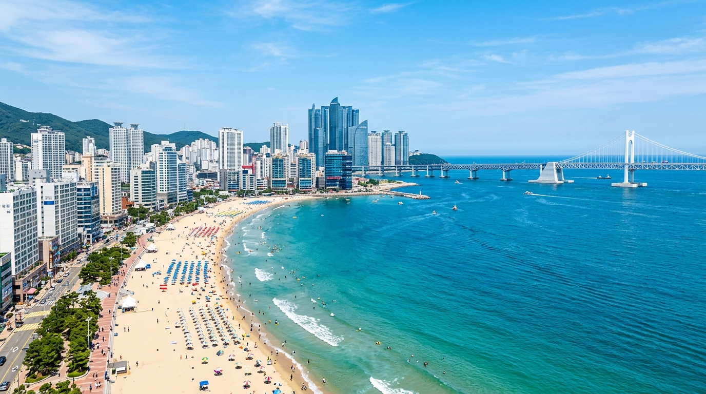
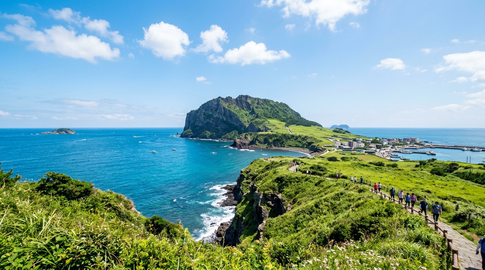
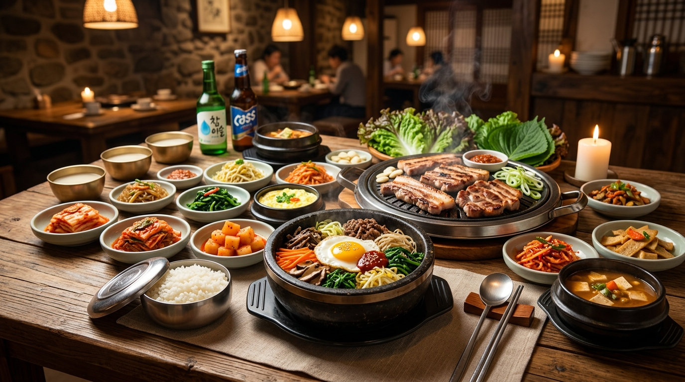

日本各地から直行便多数
WOWPASS・各種カード対応
観光通訳案内 1330番
90日以内の観光滞在
注目の人気観光エリア
大都市の熱気から美しい大自然まで、旅のスタイルに合わせて選ぶおすすめスポット
歴史とトレンドが共存する大都市
景福宮の韓服体験から、聖水洞(ソンスドン)のおしゃれカフェ、明洞や弘大のショッピングまで、初めての韓国旅行にも最適な王道エリアです。

釜山広域市青い海と新鮮な海鮮グルメの港町
海雲台の開放的なビーチリゾート、広安里の夜景、チャガルチ市場の新鮮な刺身やデジクッパなど、ソウルとは一味違う魅力に溢れています。

済州特別自治道世界自然遺産と癒やしの楽園アイランド
城山日出峰や万丈窟などのダイナミックな自然、黒豚焼き、名産のハルラボンみかん、海沿いの絶景オーシャンビューカフェが人気です。
初めてでも安心！韓国旅行の必須準備
渡航前に確認しておきたい決済・通信・交通の基本ポイントを分かりやすく解説します。
決済・WOWPASSカード
日本円の現金をそのままチャージして韓国ウォン決済ができるプリペイドカード「WOWPASS」。交通カード(T-money)機能も一体化されており必須です。
通信・eSIM / Wi-Fi
SIMカード差し替え不要の「eSIM」が主流。事前にオンライン購入しておけば、韓国の空港に到着した瞬間からスムーズに高速通信が利用できます。
必須アプリ (NAVER Map)
韓国ではGoogleマップの徒歩ルート案内が制限されているため、「NAVER Map(日本語対応)」または「KakaoMap」の事前ダウンロードが不可欠です。
観光案内 1330番
韓国観光公社が運営する無料電話案内サービス「1330」。24時間年中無休で日本語による観光情報案内やトラブル時の通訳サポートが受けられます。

五感で満喫する本場の美味。
韓国グルメ＆トレンドカルチャー
香ばしく焼き上げる極厚サムギョプサル、滋味深いタッカンマリ、具沢山の石焼ビビンバから、市場の活気溢れるトッポッキやキンパまで。韓国の食文化は旅の最大のハイライトです。
無料でおかわり自由の多彩なパンチャン(小皿おかず文化)
聖水(ソンス)・延南洞(ヨンナムドン)の感性豊かなデザートカフェ巡り
チマチョゴリ(韓服)を着用すると古宮(景福宮など)の入場料が無料に
よくあるご質問 (FAQ)
渡航前の疑問や現地での不安を解消する基本情報をまとめました。
旅行相談・最新ニュースレター登録
渡航に関するご相談やお勧めコースのご提案、最新の観光情報をお届けします。